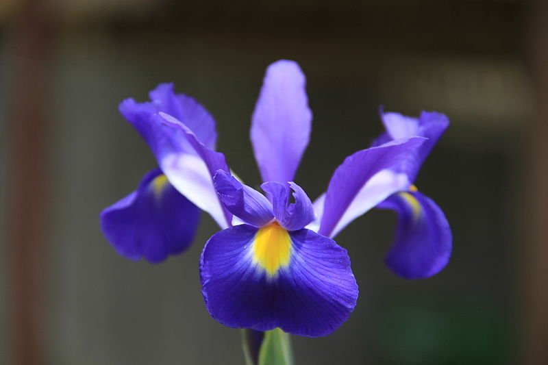

Dit ben ik: Iris.
Ik ben 33 jaar en woon in Kampen. Ik ben al bijna acht jaar samen met mijn vriend Renee. Samen hebben we
twee kinderen: Boris en Mara. Boris wordt in februari alweer drie en Mara is net 7 maand.
Al ruim zes jaar werk ik als testspecialist bij een grote verzekeringsmaatschappij. Buiten werk ben ik
uiteraard druk met de kinderen, maar ik mag ook graag haken en breien.